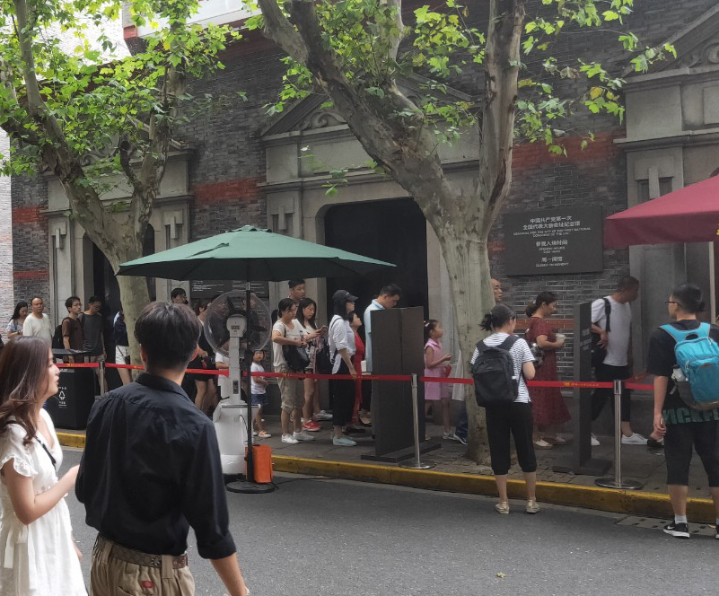
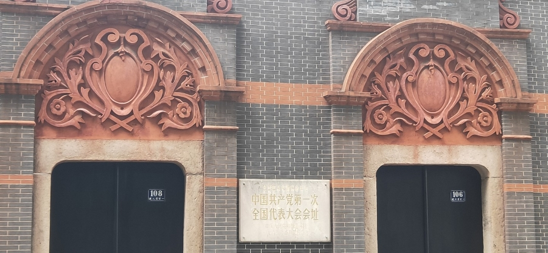
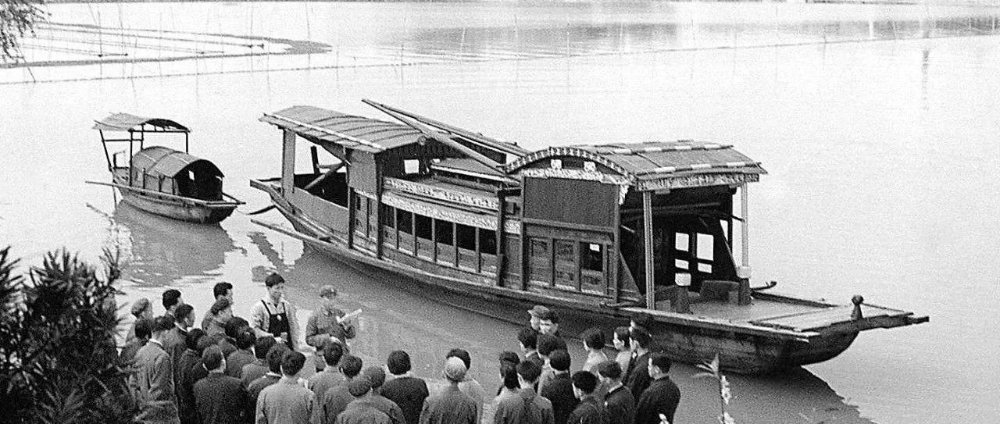
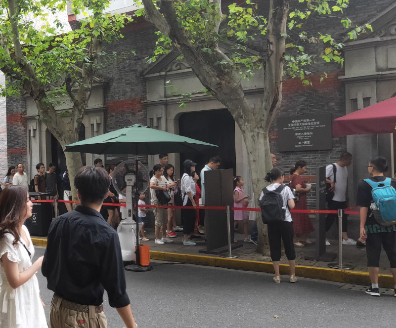
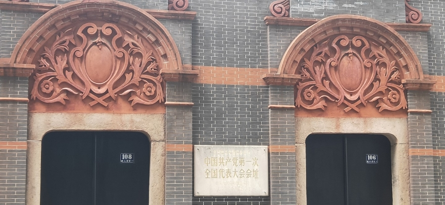
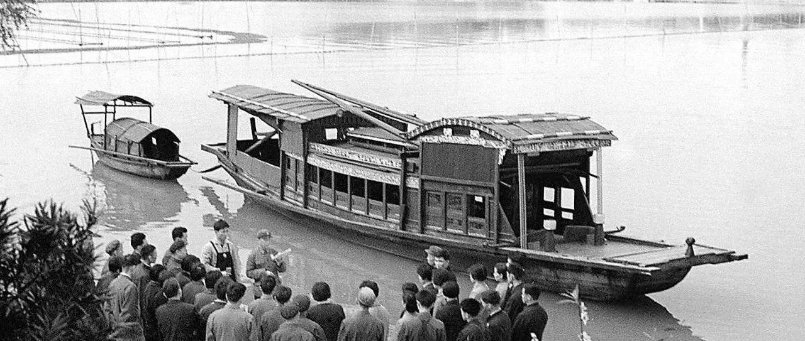

党的大事件
中国共产党第一次全国代表大会于1921年7月23日至31日在上海法租界贝勒路树德里3号（后称望志路106号，现改兴业路76号）和浙江嘉兴南湖召开。出席大会的各地代表共13人。
中国共产党第一次全国代表大会鉴于当时党员人数少、地方组织尚不健全，决定暂不成立中央委员会，先建立三人组成的中央局，并选举陈独秀任书记，张国焘为组织主任，李达为宣传主任。党的第一个中央机关由此产生。
  图中为中共一大召开会址，上海兴业路76号以及嘉兴南湖红船
中国共产党第一次全国代表大会于1921年7月23日至31日在上海法租界贝勒路树德里3号（后称望志路106号，现改兴业路76号）和浙江嘉兴南湖召开。出席大会的各地代表共13人。
中国共产党第一次全国代表大会鉴于当时党员人数少、地方组织尚不健全，决定暂不成立中央委员会，先建立三人组成的中央局，并选举陈独秀任书记，张国焘为组织主任，李达为宣传主任。党的第一个中央机关由此产生。
  图中为中共一大召开会址，上海兴业路76号以及嘉兴南湖红船